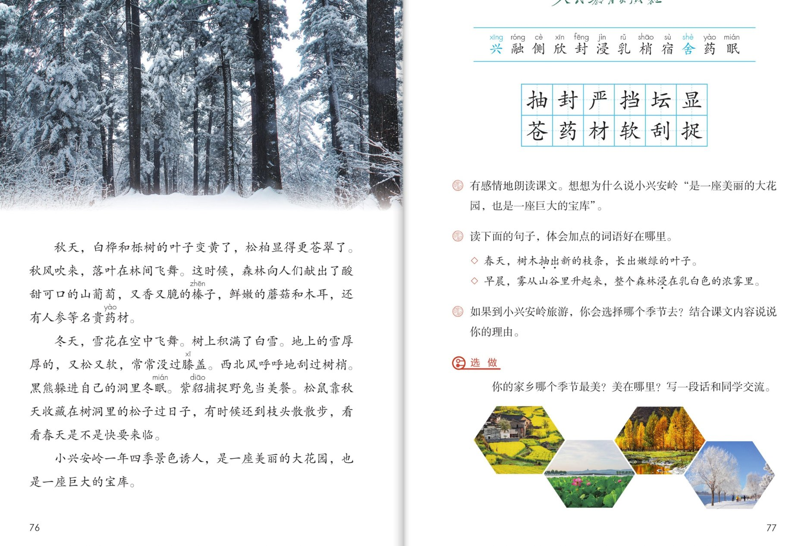

×
🔊 手机听不到声音怎么办？
① 先把手机
媒体音量调大 ，确认没开静音、没连蓝牙耳机；在微信里打开的，点右上角「⋯ → 用浏览器打开」。
② 还是没声音？到应用商店免费下载
Microsoft Edge 浏览器 （它自带朗读发声），用它打开本页面就能出声。
③ 换了 Edge 仍然没声音，说明这部手机的
硬件/系统不支持 网页朗读（多为老旧机型）；近几年买的新手机一般都能正常播放。
→ 打开声音自检
🌲 第 18 课《美丽的小兴安岭》· 有声图文带读
统编版语文 · 第六单元·阅读 · 课本 P75~77 · 素养升级版（对标 2022 课标第二学段）
课文 6 个自然段
素养目标 4
会认字 12
会写字 12
听写词 12
关键语句探究 6 卡
深入理解 8 题
本课本领 体会用词·找关键句
🎧 这样学（可随时点任意一句、一个字、一个词单独听）： ① 听读课文 ——一句一句读，读到哪一句哪一句发光；边读边想：四季各是什么样子？哪些词用得好？② 学字词 ——12 个会认字（兴、舍是多音字）、12 个会写字，点一个读一个。③ 词语·听写 ——听写 12 个课文词（读两遍→你写→报答案→听示范句），再听 4 组近义词辨析。④ 深入理解 ——8 道题（认知 / 理解 / 运用 / 拓展），先想后看。⑤ 四季小导游 ——跟着小导游走一遍春夏秋冬，再说说你最爱哪个季节。🌟 本单元任务：借助关键语句理解一段话的意思；学习围绕一个意思把一段话写清楚！
📌 本单元语文要素 ——单元导语（P69 照录）：祖国，我爱你。我爱你壮美的山河，我爱你每一寸土地。 ；要点：饱览大好河山，感受祖国之美 ；借助关键语句理解一段话的意思 ；学习围绕一个意思把一段话写清楚 。
🀄 文化自信
🀄 文化自信
云游祖国东北的小兴安岭：绿色海洋般的森林、四季不同的美、取之不尽的宝库——祖国山河壮美，值得骄傲和珍惜。
🗣 语言运用
🗣 语言运用
认识 12 个生字（兴、舍是多音字），会写 12 个字；积累葱葱茏茏、严严实实等叠词，体会抽出、浸等词语的好处。
💡 思维能力
💡 思维能力
理清总起—四季—总结的顺序，借助关键语句理解每个季节一段话的意思；还能说清自己选季节旅游的理由。
🎨 审美创造
🎨 审美创造
有感情地朗读课文，想象四季不同的画面；写一写家乡最美的季节，把见闻和感受写清楚。
点段前的 ①②③ 听整段
🔁 跟读模式：关
👁 隐藏注音（自测用）
字卡上的拼音标的是本课要认的字，读音来自课本生字表
🎤 朗读要求（老师标准） 不添字、不漏字 ；有感情地朗读课文 ，读出四季不同的美：春天轻快、夏天明亮、秋天喜悦、冬天宁静；读出节奏 ；重读，读出味道 。
🤫 默读小提示（带着四季任务默读） 听读 ——点句子听老师读；第二步 默读 ——不出声、不指读，一边读一边想：每个自然段写的什么季节？围绕哪个意思在写？哪些词用得好？ 把它们画下来；第三步 朗读 ——有感情地朗读课文 ，读出四季不同的美。
①
我国东北的小兴安岭，有数不清的红松、白桦、栎树……几百里连成一片，就像绿色的海洋。
📌 这一段讲：总起：我国东北的小兴安岭，数不清的红松、白桦、栎树几百里连成一片，就像绿色的海洋。
②
春天，树木抽出新的枝条，长出嫩绿的叶子。
山上的积雪融化了，雪水汇成小溪，淙淙地流着。
溪里涨满了春水。
小鹿在溪边散步，它们有的俯下身子喝水，有的侧着脑袋欣赏自己映在水里的影子。
📌 这一段讲：春天：树木抽出新的枝条，长出嫩绿的叶子；积雪融化汇成小溪，淙淙地流着；小鹿在溪边散步、喝水、欣赏自己的影子。
③
夏天，树木长得葱葱茏茏，密密层层的枝叶把森林封得严严实实的，挡住了人们的视线，遮住了蓝蓝的天空。
早晨，雾从山谷里升起来，整个森林浸在乳白色的浓雾里。
太阳出来了，千万缕耀眼的金光穿过树梢，照射在工人宿舍门前的草地上。
草地上盛开着各种各样的野花，红的、白的、黄的、紫的，真像个美丽的大花坛。
📌 这一段讲：夏天：树木葱葱茏茏，枝叶把森林封得严严实实；早晨浓雾浸着森林，太阳出来千万缕金光穿过树梢；草地上野花盛开，像美丽的大花坛。
④
秋天，白桦和栎树的叶子变黄了，松柏显得更苍翠了。
秋风吹来，落叶在林间飞舞。
这时候，森林向人们献出了酸甜可口的山葡萄，又香又脆的榛子，鲜嫩的蘑菇和木耳，还有人参等名贵药材。
📌 这一段讲：秋天：白桦栎树叶子变黄，松柏更苍翠，落叶在林间飞舞；森林献出山葡萄、榛子、蘑菇和木耳，还有人参等名贵药材。
⑤
冬天，雪花在空中飞舞。
树上积满了白雪。
地上的雪厚厚的，又松又软，常常没过膝盖。
西北风呼呼地刮过树梢。
黑熊躲进自己的洞里冬眠。
紫貂捕捉野兔当美餐。
松鼠靠秋天收藏在树洞里的松子过日子，有时候还到枝头散散步，看看春天是不是快要来临。
📌 这一段讲：冬天：雪花飞舞，雪厚厚的又松又软；黑熊冬眠，紫貂捕野兔，松鼠靠藏好的松子过日子，还到枝头散步盼春天。
⑥
小兴安岭一年四季景色诱人，是一座美丽的大花园，也是一座巨大的宝库。
📌 这一段讲：总结：小兴安岭一年四季景色诱人，是一座美丽的大花园，也是一座巨大的宝库（全文总结句）。
🤔 想一想（点我可跳过）
双页宽图自动占整行

第 76~77 页 · 课文与课后练习
📖 人教版《语文》三年级上册 · 课本第 75~77 页 · 图片仅供个人学习，版权归人民教育出版社所有
📚 注释① 本文选自人民教育出版社《全日制十年制学校小学课本（试用本）语文第六册》，有改动。
点一个字，听读音、词语和在课文里的句子
结构、部首、笔画与书写提示为通用规范，供参考，以教材和老师的指导为准
抽chōu
抽出
左右 · 扌 · 8画
提手旁横平竖直有力度，右边由字中竖要正，横画间距匀称。
封fēng
封住
左右 · 寸 · 9画
左边两个土上下叠放写扁，右边寸字横短点正，竖钩要有力。
严yán
严严实实
上下 · 一 · 7画
第一笔横要长，中间两竖间距均匀，下面撇画舒展，把字撑稳。
挡dǎng
挡住
左右 · 扌 · 9画
提手旁写窄，右边当字中竖端正，横画间距匀称。
坛tán
花坛
左右 · 土 · 7画
土字旁横短竖长、末笔变提，右边云字第二横要长，稳稳托住。
显xiǎn
显得
上下 · 日 · 9画
上面日字写扁，下面业字竖画间隔均匀，底横要长托住上部。
苍cāng
苍翠
上下 · 艹 · 7画
草字头横长两竖分开，下面仓字撇画舒展，竖弯钩要圆润有力。
药yào
药材
上下 · 艹 · 9画
草字头写扁，下面约字绞丝旁要紧凑，横折钩包住里面的点。
材cái
木材
左右 · 木 · 7画
木字旁末笔变点写窄，右边才字横短竖钩正，撇画从交叉处起笔。
软ruǎn
又松又软
左右 · 车 · 8画
车字旁末笔变提写窄，右边欠字横钩起笔对准车旁，撇捺要舒展。
刮guā
刮过
左右 · 刂 · 8画
左边舌字横画上短下长，竖画端正，右边立刀旁竖钩要有力。
抓zhuā
抓住
左右 · 扌 · 7画
提手旁窄长，右边爪字撇画分开写舒展，像小手抓东西。
点一行，听读这一组词语
抽 抽出 抽芽 抽水
封 封住 封闭 封山
苍 苍翠 苍老 白发苍苍
坛 花坛 天坛 坛子
读两遍 → 你在纸上写 → 报答案 → 听示范句
准备听写 · 共 12 个词
○ ○ ○
点下面的「开始听写」，听到一个词就写一个词。
▶ 开始听写
🔁 再读一遍
👁 看答案
点词听读，点句子听示范句，再自己说一句
1 抽出 课文词
示范句：春天，树木抽出新的枝条，长出嫩绿的叶子。
✏️ 我也能说：春天，树木怎样新的枝条。
2 封住 课文词
示范句：密密层层的枝叶把森林封得严严实实的。
✏️ 我也能说：密密层层的枝叶把森林怎么样。
3 严严实实 课文词
示范句：密密层层的枝叶把森林封得严严实实的。
✏️ 我也能说：封得怎么样。
4 挡住 课文词
示范句：挡住了人们的视线，遮住了蓝蓝的天空。
✏️ 我也能说：挡住了人们的什么。
5 花坛 课文词
示范句：草地上盛开着各种各样的野花，真像个美丽的大花坛。
✏️ 我也能说：草地上盛开着野花，像什么。
6 显得 课文词
示范句：秋天，白桦和栎树的叶子变黄了，松柏显得更苍翠了。
✏️ 我也能说：松柏怎么样更苍翠了。
7 苍翠 课文词
示范句：松柏显得更苍翠了。
✏️ 我也能说：松柏显得怎么样。
8 药材 课文词
示范句：还有人参等名贵药材。
✏️ 我也能说：森林里还有人参等什么。
9 木材 课文词
示范句：工人用小兴安岭的木材盖房子。
✏️ 我也能说：盖房子要用什么。
10 又松又软 课文词
示范句：地上的雪厚厚的，又松又软，常常没过膝盖。
✏️ 我也能说：地上的雪怎么样。
11 刮过 课文词
示范句：西北风呼呼地刮过树梢。
✏️ 我也能说：西北风呼呼地怎样树梢。
12 抓住 课文词
示范句：小猴子抓住树枝荡秋千。
✏️ 我也能说：小猴子怎样树枝荡秋千。
相同点 / 不一样在哪 / 各造一句
抽出 — 长出
相同：都表示生长出来。
不一样：抽出 写出枝条像被抽出来一样，又快又直又有力；长出 泛指慢慢生长。
抽出：春天，树木抽出新的枝条。
诱人 — 迷人
相同：都表示吸引人、让人喜爱。
不一样：诱人 偏重让人心里想要，多形容景色、食物；迷人 偏重让人陶醉，多形容姿态、色彩。
诱人：小兴安岭一年四季景色诱人。
名贵 — 珍贵
相同：都表示价值高、不平常。
不一样：名贵 偏重有名又贵重；珍贵 偏重价值大、意义深。
名贵：森林里还有人参等名贵药材。
苍翠 — 翠绿
相同：都表示青绿色。
不一样：苍翠 偏重深绿而有生气，多形容松柏等草木；翠绿 偏重像翡翠一样的鲜绿。
苍翠：松柏显得更苍翠了。
叠词读出节奏 淙淙 呼呼 厚厚的 严严实实
森林的颜色 嫩绿 葱葱茏茏 乳白色 苍翠
森林的宝物 山葡萄 榛子 蘑菇和木耳 名贵药材
四季的样子 抽出枝条 封得严严实实 落叶飞舞 雪花飞舞
点一张卡，听这条阅读线索
前两课我们学会了找关键句 ，这一课再学一样本领：体会用得好的词语 ——六张卡片，看小兴安岭的关键句和好词藏在哪里。
🌲 总起句先看全景
第①段有数不清的红松、白桦、栎树……几百里连成一片，就像绿色的海洋——总起句先让我们看见整片森林。
🌸 每个季节都有关键样子
春天嫩绿、夏天葱葱茏茏、秋天苍翠飞舞、冬天又松又软——按季节顺序，一段写一个季节的样子。
🔑 总结句收全文
小兴安岭一年四季景色诱人，是一座美丽的大花园，也是一座巨大的宝库——正是课后题①要解释的那一句。
🌿 抽出比长出妙
树木抽出新的枝条——抽出写出了枝条快速长出、又直又有力的样子，这就是课后题②要体会的用词。
🌫 浸字让雾活起来
整个森林浸在乳白色的浓雾里——浸字像把森林泡在牛奶里，雾的多和浓一下子全写出来了。
🎁 献出写出森林的慷慨
森林向人们献出了山葡萄、榛子、蘑菇和木耳……把森林当成人来写，物产多，正对应巨大的宝库。
标「答案不唯一」的题，说得有道理都对
认知 小兴安岭的春天是什么样的？看解析
🤔 想一想
解析：
春天，树木抽出新的枝条，长出嫩绿的叶子；山上的积雪融化了，雪水汇成小溪，淙淙地流着，溪里涨满了春水；小鹿在溪边散步，有的俯下身子喝水，有的侧着脑袋欣赏自己映在水里的影子。
🌈 答案不唯一，说得有道理都对
认知 冬天，森林里的动物们各自在做什么？看解析
🤔 想一想
解析：
黑熊躲进自己的洞里冬眠；紫貂捕捉野兔当美餐；松鼠靠秋天收藏在树洞里的松子过日子，有时候还到枝头散散步，看看春天是不是快要来临。
🌈 答案不唯一，说得有道理都对
理解 读下面的句子，体会加点的词语好在哪里。（课后题②照录）◇ 春天，树木抽出新的枝条，长出嫩绿的叶子。◇ 早晨，雾从山谷里升起来，整个森林浸在乳白色的浓雾里。看解析
🤔 想一想
解析：
抽出写出了枝条快速长出、又直又有力的样子，比长出更生动；浸字把森林写成了泡在乳白色浓雾里的样子，让人感到雾特别多、特别浓——一个词就写活了一幅画。🌈 说出自己的体会、有道理都对。
🌈 答案不唯一，说得有道理都对
理解 想想为什么说小兴安岭是一座美丽的大花园，也是一座巨大的宝库。（课后题①照录）看解析
🤔 想一想
解析：
说它是美丽的大花园，因为一年四季景色诱人：春天嫩绿、夏天葱葱茏茏、金光野花、秋天落叶飞舞、冬天白雪皑皑；说它是巨大的宝库，因为森林献出了山葡萄、榛子、蘑菇和木耳，还有人参等名贵药材，树木更是数不清。🌈 结合课文说出一两处理由都对。
🌈 答案不唯一，说得有道理都对
理解 小鹿在溪边散步，它们有的俯下身子喝水，有的侧着脑袋欣赏自己映在水里的影子。——这句好在哪里？看解析
🤔 想一想
解析：
散步、欣赏把小鹿当成人来写，仿佛小鹿也在悠闲地照镜子，写出了小鹿的可爱和森林的生机，读起来特别亲切。
🌈 答案不唯一，说得有道理都对
运用 如果到小兴安岭旅游，你会选择哪个季节去？结合课文内容说说你的理由。（课后题③照录）看解析
🤔 想一想
解析：
示范：我想夏天去。因为夏天树木长得葱葱茏茏，早晨整个森林浸在乳白色的浓雾里，太阳出来后千万缕耀眼的金光穿过树梢，草地上还盛开着各种颜色的野花，像美丽的大花坛。🌈 选哪个季节都行，关键要引用课文里的句子说清理由。
🌈 答案不唯一，说得有道理都对
运用 你的家乡哪个季节最美？美在哪里？写一段话和同学交流。（教材 P77 选做照录）看解析
🤔 想一想
解析：
写作支架：第一句总起——我的家乡xx季节最美；再写两三处景物（天空、田野、河流、人们……），学着用一两个叠词或把景物当成人来写；最后用一句话收尾。🌈 写完读给同学听。
🌈 答案不唯一，说得有道理都对
拓展 课文是按什么顺序写的？每个季节的段落围绕什么来写？看解析
🤔 想一想
解析：
全文按时间（季节）顺序写：先总起绿色海洋，再按春天、夏天、秋天、冬天一段一景，最后总结美丽的大花园、巨大的宝库。每个季节的段落都围绕这个季节的景色和物产来写。🌈 先找总起句和总结句，再看中间四季怎么围绕关键内容写。
🌈 答案不唯一，说得有道理都对
💬 想象支架：总起 绿色的大海洋 → 春 嫩绿 → 夏 葱茏 → 秋 丰收 → 冬 白雪 → 总结 大花园、大宝库。轮到你了：按四季顺序说一说小兴安岭的样子，再说说你想哪个季节去、为什么（正是课后题①③）。
点一个角色，听他（她）的介绍
🎭 旁白
我国东北的小兴安岭，有数不清的红松、白桦、栎树……几百里连成一片，就像绿色的海洋。 / 小兴安岭一年四季景色诱人，是一座美丽的大花园，也是一座巨大的宝库。
💬 小导游要读出季节的味道 ：春天轻快、夏天明亮、秋天喜悦、冬天宁静
🎭 小导游·春天
春天，树木抽出新的枝条，长出嫩绿的叶子。山上的积雪融化了，雪水汇成小溪，淙淙地流着。溪里涨满了春水。 / 小鹿在溪边散步，它们有的俯下身子喝水，有的侧着脑袋欣赏自己映在水里的影子。
💬 小导游要读出季节的味道 ：春天轻快、夏天明亮、秋天喜悦、冬天宁静
🎭 小导游·夏天
夏天，树木长得葱葱茏茏，密密层层的枝叶把森林封得严严实实的，挡住了人们的视线，遮住了蓝蓝的天空。 / 早晨，雾从山谷里升起来，整个森林浸在乳白色的浓雾里。太阳出来了，千万缕耀眼的金光穿过树梢，照射在工人宿舍门前的草地上。 / 草地上盛开着各种各样的野花，红的、白的、黄的、紫的，真像个美丽的大花坛。
💬 小导游要读出季节的味道 ：春天轻快、夏天明亮、秋天喜悦、冬天宁静
🎭 小导游·秋天
秋天，白桦和栎树的叶子变黄了，松柏显得更苍翠了。秋风吹来，落叶在林间飞舞。 / 这时候，森林向人们献出了酸甜可口的山葡萄，又香又脆的榛子，鲜嫩的蘑菇和木耳，还有人参等名贵药材。
💬 小导游要读出季节的味道 ：春天轻快、夏天明亮、秋天喜悦、冬天宁静
🎭 小导游·冬天
冬天，雪花在空中飞舞。树上积满了白雪。地上的雪厚厚的，又松又软，常常没过膝盖。西北风呼呼地刮过树梢。 / 黑熊躲进自己的洞里冬眠。紫貂捕捉野兔当美餐。松鼠靠秋天收藏在树洞里的松子过日子，有时候还到枝头散散步，看看春天是不是快要来临。
💬 小导游要读出季节的味道 ：春天轻快、夏天明亮、秋天喜悦、冬天宁静
每题给自己打 1~3 颗星
1. 我能正确认读 12 个会认字（含多音字兴、舍），规范书写 12 个会写字。 ☆ ☆ ☆
2. 我能有感情地朗读课文，读出四季不同的美。 ☆ ☆ ☆
3. 我能说出抽出、浸等词语好在哪里。 ☆ ☆ ☆
4. 我能按总起—四季—总结的顺序，说出小兴安岭为什么是大花园、大宝库。 ☆ ☆ ☆
5. 我能选一个季节说清旅游理由，并写一段话介绍家乡最美的季节。 ☆ ☆ ☆
✍️ 选做 ：你的家乡哪个季节最美？美在哪里？ 写一段话和同学交流。季节 ；总起一句 ：我的家乡××季节最美；两三处景物 ，学着课文用一两个叠词，或把景物当成人来写；最后一句话收尾 ，再读给同学听。